library(tidyverse)
library(lubridate)
library(vegan)
library(broom)
library(viridis)
library(ggvegan)
library(gridExtra)
library(dendsort)
library(pheatmap)
library(RColorBrewer)
library(DT)
library(knitr)
knitr::opts_chunk$set(comment="", cache=T, warning = F, message = F, fig.path = "images_volatiles2020/", fig.height=8, fig.width=8)
options(digits=4) # for kables
load("data/volatiles/maxfield_volatiles.rda")
load("data/maxfield_data.rda")
#check for duplicates
#View(vt %>% filter(!exclude %in% c("flowers", "incomplete", "resample")) %>% count(sampledate.file, plot.file, subplot.file, plant.file) %>% filter(n>1) %>% left_join(vt)) #exclude="resample"
#View(maxfmeta %>% count(sampledate,plantid) %>% filter(n>1) %>% left_join(maxfmeta))
#TODO fix these GCMS filename duplicates
volsmeta <- maxfmeta %>% mutate(sampledate = as.Date(sampledate), year = factor(year(sampledate))) %>%
drop_na(plotid) %>% #cut out ambients, leaving 459 chromatograms
filter(year %in% c("2018","2019","2020")) %>% droplevels() %>%
mutate(plot=str_sub(plotid, 1,1), subplot=str_sub(plotid, 2,2),
sequence.date = date(sequence.start),
sequence.year = year(sequence.date)) %>%
rename(sampledate.file=sampledate, plot.file = plot, subplot.file=subplot, plant.file=plant) %>%
left_join(vt %>% select(-c(colnames(treatments),"type","plantid")) %>%
filter(!exclude %in% c("flowers", "incomplete", "resample"))) %>%
left_join(treatments) %>% #assume that the written metadata is correct not the info in the .file name
mutate(total_time = end - bag,
total_time = replace_na(total_time, median(total_time, na.rm=T)),# fill in 45 minutes when missing metadata
pump_id=as.character(pump_id))
volsmeta <- left_join(volsmeta, volsmeta %>% count(sequence.date, sequence.start) %>% group_by(sequence.date) %>% mutate(sequence.12 = paste(sequence.date, row_number()))) #add the batch number for that day (1 or 2)
rownames(volsmeta) <- volsmeta$index Sample size
Calculated from two datasets that will eventually match: datasheets from sampling and GC-MS filenames.
bind_rows(sampling=vt %>% group_by(year, type) %>% tally(),
filenames=maxfmeta %>% mutate(year=factor(year(sampledate))) %>% group_by(year, type) %>% tally(), .id="source") %>%
pivot_wider(names_from=c(year,type), values_from = n) %>% kable()| source | 2018_floral | 2019_floral | 2020_floral | 2018_ambient | 2019_ambient | 2020_ambient | 2021_ambient | 2021_floral |
|---|---|---|---|---|---|---|---|---|
| sampling | 153 | 142 | 167 | NA | NA | NA | NA | NA |
| filenames | 168 | 146 | 145 | 15 | 12 | 7 | 5 | 44 |
bind_rows(sampling=vt %>% filter(type=="floral") %>% group_by(year, water, snow) %>% tally(),
filenames=volsmeta %>% mutate(year=factor(year(sampledate.file))) %>% group_by(year, water, snow) %>% tally(), .id="source") %>%
pivot_wider(names_from=c(year), values_from = n) %>% kable()| source | water | snow | 2018 | 2019 | 2020 |
|---|---|---|---|---|---|
| sampling | Addition | Early | 28 | 15 | 21 |
| sampling | Addition | Normal | 28 | 40 | 28 |
| sampling | Control | Early | 28 | 24 | 40 |
| sampling | Control | Normal | 33 | 23 | 39 |
| sampling | Reduction | Early | 20 | 15 | 19 |
| sampling | Reduction | Normal | 16 | 25 | 20 |
| filenames | Addition | Early | 36 | 14 | 23 |
| filenames | Addition | Normal | 31 | 40 | 19 |
| filenames | Control | Early | 28 | 24 | 32 |
| filenames | Control | Normal | 34 | 25 | 35 |
| filenames | Reduction | Early | 22 | 17 | 18 |
| filenames | Reduction | Normal | 17 | 26 | 18 |
bind_rows(sampling = vt %>% filter(type=="floral") %>% group_by(sampledate.file) %>% tally(),
filenames = volsmeta %>% drop_na(sampledate.file) %>% group_by(sampledate.file) %>% tally(), .id="source") %>%
ggplot(aes(x=yday(sampledate.file), y=n, fill=source)) + geom_col(position=position_dodge(preserve="single")) +
facet_wrap(vars(year(sampledate.file)), ncol=1) +
labs(x="VOC sampling date (day of year)", y="Floral samples")
Matching datasheets and filenames
# diagnostics for matching up vt (datasheets) and volsmeta (filenames)
volsmeta.samp <- volsmeta %>% mutate(samp = paste(sampledate.file, plot.file, subplot.file, plant.file)) %>% arrange(samp) %>% pull(samp)
vt.samp <- vt %>% mutate(samp = paste(sampledate.file, plot.file, subplot.file, plant.file)) %>% arrange(samp) %>% pull(samp)
#intersect(volsmeta.samp, vt.samp) #in both volsmeta and vt
cat("Have files but not datasheet entries:")Have files but not datasheet entries:setdiff(volsmeta.samp, vt.samp) [1] "2018-07-06 5 B 15" "2018-07-09 6 D 167" "2018-07-30 5 A 173"
[4] "2018-07-30 5 A 175" "2018-07-30 5 A 181" "2018-07-30 5 C 216"
[7] "2018-07-30 6 A 160" "2018-07-30 6 B 25" "2018-07-30 6 B 34"
[10] "2018-07-30 6 C 102" "2018-07-30 6 C 82" "2018-07-30 6 C 87"
[13] "2018-07-30 6 D 38" "2018-07-30 6 D 45" "2019-07-17 5 B 1"
[16] "2019-07-17 5 C 214" "2019-07-17 5 D 264" "2019-07-17 6 A 156"
[19] "2019-07-17 6 B 29" "2019-07-17 6 C 83" "2019-07-17 6 D 40" cat("Have datasheet entries but no files:")Have datasheet entries but no files:setdiff(vt.samp, volsmeta.samp) [1] "2018-06-28 1 B 655" "2018-06-28 1 C 50" "2018-06-29 2 C 265"
[4] "2018-07-06 5 B 574" "2018-07-09 6 D 44" "2018-07-16 6 C 271"
[7] "2019-07-22 4 D 60" "2019-07-26 2 A 166" "2019-07-26 5 A 193"
[10] "2019-07-26 5 B 13" "2019-07-26 5 D 241" "2020-07-01 2 A 285"
[13] "2020-07-01 2 B 138" "2020-07-01 2 D 193" "2020-07-01 3 A 125"
[16] "2020-07-01 3 A 278" "2020-07-01 3 B 603" "2020-07-01 5 A 185"
[19] "2020-07-01 5 B 16" "2020-07-01 5 D 242" "2020-07-29 1 B 650"
[22] "2020-07-29 1 B 653" "2020-07-29 3 C 133" "2020-07-29 3 C 137"
[25] "2020-07-29 3 C 139" "2020-07-29 3 C 153" "2020-07-29 3 C 166"
[28] "2020-07-29 3 C 173" "2020-07-29 3 C 177" "2020-07-29 4 D 52"
[31] "2020-07-29 6 D 45" vt.volsmeta <- full_join(vt %>% select(vt.n, sampledate.file, plot.file, subplot.file, plant.file) %>% mutate(in.vt=T),
volsmeta %>% select(FileName, sampledate.file, plot.file, subplot.file, plant.file) %>% mutate(in.volsmeta=T)) %>%
mutate(across(c(in.vt, in.volsmeta), ~replace_na(.,FALSE)))
vt.volsmeta.count <- vt.volsmeta %>% count(sampledate.file, in.vt, in.volsmeta) %>% mutate(status=paste("datasheet",ifelse(in.vt,"yes","no"),"+","GCfile", ifelse(in.volsmeta,"yes","no")))
#View(vt.volsmeta.count %>% filter(!in.vt | !in.volsmeta) %>% arrange(sampledate.file))
ggplot(vt.volsmeta.count, aes(x=as.Date(sampledate.file),y=n, fill=status))+ geom_col() +
facet_wrap(vars(year(sampledate.file)), scales="free_x", ncol=1) +
scale_x_date(breaks=scales::date_breaks(width = "7 days"), minor_breaks = scales::date_breaks(width = "1 days")) +
theme_minimal() + theme(legend.position="top") + scale_fill_manual(values=c("red","orange","darkgreen")) +
labs(x="Sampling date (according to GCfile)", y="Samples", fill="Data status")
Soil moisture
ggplot(vt %>% drop_na(water), aes(x=factor(sampledate), y=VWC, color=water)) + facet_wrap(vars(year), ncol = 1, scales="free_x") +
geom_boxplot() + scale_color_manual(values=water_pal) + scale_x_discrete(guide = guide_axis(angle=90)) +
labs(x="Date", y="Soil moisture (%VWC)", color="Precipitation")
GCMS data checks
Filtering
Filtering criteria (verdict=“fvoc” in the table below):
- Present in 10% of samples
- Maximum peak area is at least 4000000
- Passes t-test against ambient controls with FDR correction OR mean exceeds 4x mean of controls
- Not a known contaminant (Oxybenzone, Ethanol, 2,2’-oxybis-, Butylated Hydroxytoluene, Caprolactam, [1,1’-Bicyclopentyl]-2-one, L-Lactic acid, Pentadecane, 8-hexyl-, Decane, 2,8,8-trimethyl-, 2-Methyltetradecan-2-ol)
Note that these potential floral compounds did not meet the tests against ambient controls: 2-phenylacetaldehyde, 3-carene, D-limonene, camphene, benzaldehyde, a-thujene, sabinene, abietadiene, 2-ethylhexan-1-ol
Plus (verdict other than “fvoc”):
- bis14: compounds included in Bischoff et al. (2014)
- keep: kept since they are known floral volatiles
- keep_leaf: kept since they are known leaf volatiles
- merge: a compound that is a synonym of one of the floral volatiles (b-caryophyllene, b-ocimene, verbenone)
vols <- maxf[volsmeta$index,]
vols.cut <- vols[,colSums(vols)>3e8]
ipochems <- read_csv("data/volatiles/chemsf_ipo.csv") %>%
filter(verdict %in% c("bis14", "fvoc", "keep","keep_leaf","merge"),
name %in% colnames(vols)[colSums(vols)>0]) %>% #filter empty compounds
mutate(standard = fct_recode(standard, "Methyl_salicylate"="Benzaldehyde")) %>% #TODO find benzaldehyde regressions
left_join(read_csv("data/volatiles/regressions_181921_filtered_slopes.csv") %>%
pivot_wider(id_cols=standard, names_from="year", names_prefix="area_per_ng", values_from=area_per_ng)) #TODO get appropriate slopes for each year
ipogood <- ipochems$name
vols.good <- vols[,ipogood] %>%
#sweep(2, ipochems$area_per_ng, FUN = '/') %>% # convert areas to nanograms
sweep(1, as.numeric(volsmeta$total_time, units="hours"), FUN = '/') #divide by equilibration + pumping time
for(yr in unique(volsmeta$sequence.year)) {
thisyr <- volsmeta$sequence.year==yr
vols.good[thisyr,] <- sweep(vols.good[thisyr,], 2, pull(ipochems, paste0("area_per_ng",yr)), FUN = '/')# convert areas to nanograms
}
nonzero <- rowSums(vols.good) > 0 #one sample ("55" on row 44) has no volatiles
k <- 2 #split into this many k-means cluster per year
volsmeta$cluster <- 0
for(yr in unique(year(volsmeta$sequence.start))) {
thisyr <- volsmeta$sequence.year==yr
chems.include <- setdiff(colnames(vols.cut), ipogood) #drop alpha-pinene so this is all nonfloral
set.seed(1)
volsmeta$cluster[thisyr] <- kmeans(decostand(vols.cut[thisyr,chems.include], method="log"), k, nstart=3)$cluster
}
volsmeta <- volsmeta %>% mutate(year.cluster = paste0(year, if_else(sequence.year == 2018, "", paste0(".",cluster))))
ipochems %>% select(verdict, name, RT, mean, max, match, freq.floral, freq.ambient, ambient_ratio, filter_ambient_ttest, filters_passed, standard) %>%
arrange(desc(freq.floral)) %>% mutate(across(starts_with("freq."), round, 3)) %>%
DT::datatable(caption="Volatile compounds to use for analysis")vols.good.top <- vols.good[,colSums(decostand(vols.good,"pa"))>81]#occur in more than N samples
ipogood.top <- names(sort(colSums(vols.good.top), decreasing=T))
volsmeta.good.top <- bind_cols(volsmeta, vols.good.top) %>%
pivot_longer(-all_of(colnames(volsmeta))) %>%
mutate(name = fct_relevel(name, ipogood.top))
traits.good.top <- volsmeta.good.top %>%
left_join(mnps.plantyr %>% select(year, plotid, plant, all_of(traits))) %>%
mutate(name = fct_relevel(name, ipogood.top))
vols.drydown <- vols[,c("1,3-Octadiene","Benzyl alcohol", "(1R)-2,6,6-Trimethylbicyclo[3.1.1]hept-2-ene",".alpha.-Farnesene", "Bicyclo[3.1.1]heptane, 6,6-dimethyl-2-methylene-, (1S)-", ".beta.-Ocimene")]
volsmeta.drydown <- bind_cols(volsmeta, vols.drydown) %>% pivot_longer(-all_of(colnames(volsmeta)))Heatmap
annot_pal <- list(
sequence.date = volsmeta %>% mutate(yr = sequence.year) %>% group_by(yr) %>% summarize(n = length(unique(sequence.date))) %>%
pull(n) %>% map(scales::hue_pal()) %>% unlist() %>% set_names(unique(volsmeta$sequence.date)),
cluster = set_names(brewer.pal(8, "Set1")[1:length(unique(volsmeta$cluster))], unique(volsmeta$cluster)))
pheatmap(as.matrix(t(vols.cut))^(1/4),
cluster_cols=F, show_colnames=F,
clustering_method="mcquitty", clustering_distance_rows="correlation",
clustering_callback = function(hc, ...){dendsort(hc, type="average")},
scale="none", color=mako(512),main="Unfiltered top volatiles",
annotation_col=volsmeta %>% select(sequence.date, cluster) %>% mutate(across(everything(), factor)),
annotation_colors = annot_pal,
gaps_col = which(diff(year(volsmeta$sequence.date))>0))
pheatmap(as.matrix(t(vols.good))^(1/4),
cluster_cols=F, show_colnames=F,
clustering_method="mcquitty", clustering_distance_rows="correlation",
clustering_callback = function(hc, ...){dendsort(hc, type="average")},
scale="none", color=mako(512),main="Filtered volatiles",
annotation_col=volsmeta %>% select(sequence.date, cluster) %>% mutate(across(everything(), factor)),
annotation_colors = annot_pal,
gaps_col = which(diff(year(volsmeta$sequence.date))>0))
pinene_correlates <- cor(sqrt(vols[,colSums(vols)>3e7])) %>% as.data.frame() %>% filter(`(1R)-2,6,6-Trimethylbicyclo[3.1.1]hept-2-ene`>0.15) %>% rownames()
pheatmap(as.matrix(t(vols[,pinene_correlates]))^(1/4),
cluster_cols=F, show_colnames=F,
clustering_method="mcquitty", clustering_distance_rows="correlation",
clustering_callback = function(hc, ...){dendsort(hc, type="average")},
scale="none", color=mako(512),
annotation_col=volsmeta %>% select(sequence.date, cluster) %>% mutate(across(everything(), factor)),
annotation_colors = annot_pal,
gaps_col = which(diff(year(volsmeta$sequence.date))>0), main="Volatiles that correlate with alpha-pinene")
Chromatograms by GCMS run date
Univariate
plot_vols_rundate <- function(type, checkvols) {
volsmeta %>% mutate(yr=year(Desorb.Start.Time)) %>%
bind_cols(vols %>% select(checkvols)) %>% pivot_longer(cols=checkvols) %>%
ggplot(aes(x=Desorb.Start.Time)) + facet_grid(name ~ yr, scales="free") +
geom_point(aes(y=value, color=name), alpha=0.3) +
guides(color="none") + theme_bw() + labs(x="GCMS run time", y="Area", title=type)
}
plot_vols_rundate("Terpenes", c("(1R)-2,6,6-Trimethylbicyclo[3.1.1]hept-2-ene", ".beta.-Myrcene",".beta.-Ocimene","Linalool","Caryophyllene", "Longifolene"))
plot_vols_rundate("Benzenoids", c("Benzophenone","Methyl salicylate","Anisole"))
plot_vols_rundate("Green leaf volatiles", c("4-Hexen-1-ol, (Z)-", "3-Hexen-1-ol, (E)-"))
Multivariate
for(categories in list(c("water","snow"),"plot","observer","pump_id","sequence.12", "sampledate", c("sampledate", "sequence.12"), c("sampledate.observer", "sequence.12"))) {
cluster_counts <- volsmeta %>%
mutate(sampledate = coalesce(sampledate, sampledate.file),
sampledate.observer = paste(sampledate, observer)) %>%
count(!!!syms(c("sequence.year", categories, "cluster")))
p <- ggplot(cluster_counts, aes(x=factor(paste(!!!syms(categories), sep=" x ")),
y=n, fill=factor(paste0(sequence.year," C",cluster)))) +
geom_col() + facet_wrap(vars(sequence.year), scales="free_x") +
theme(axis.text.x = element_text(angle=90)) + labs(fill="Cluster", x=paste(categories, collapse=" x ")) +
scale_fill_brewer(palette="Paired")
print(p)
if(length(categories)>1) {
(p2 <- cluster_counts %>% filter(sequence.year !="2018") %>% mutate(cluster=factor(cluster), across(where(~ !is.numeric(.)),factor)) %>%
ggplot(aes_string(x=categories[[1]], y = categories[[2]], size="n", color="cluster")) + geom_point(shape=1, stroke=1) +
facet_wrap(vars(sequence.year), scales="free") + theme_minimal()+ scale_size_area(max_size=15)+
theme(axis.text.x = element_text(angle=90)) + scale_color_manual(values=c("darkgreen","magenta")))
print(p2)
}
}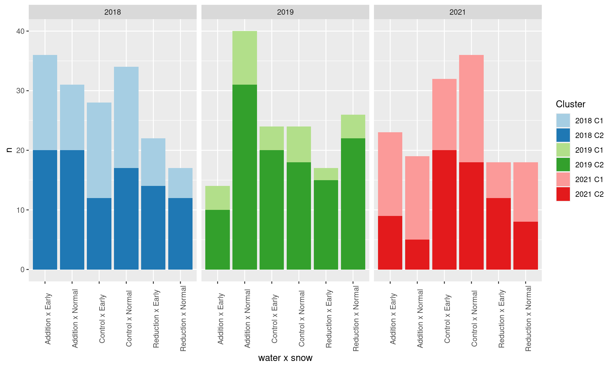
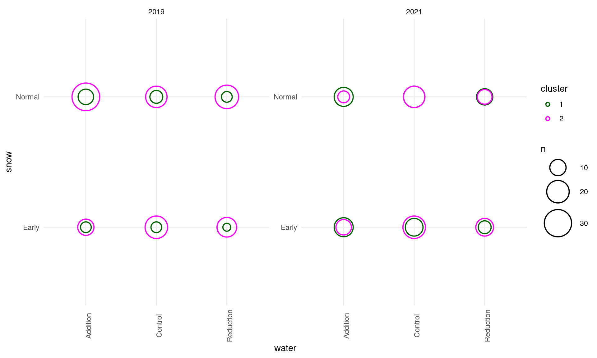
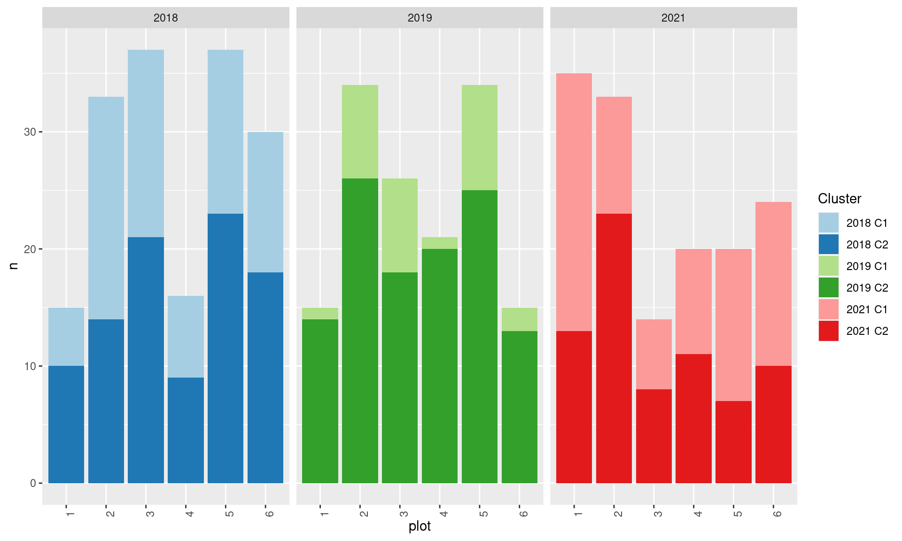
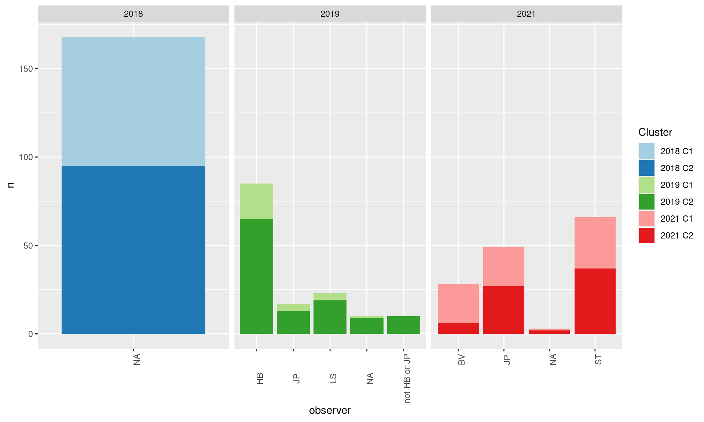
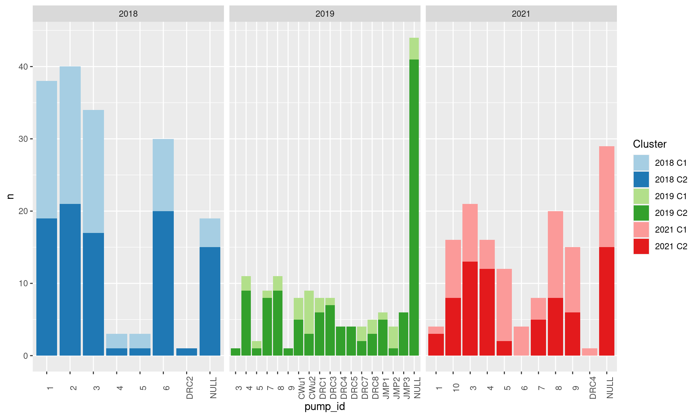
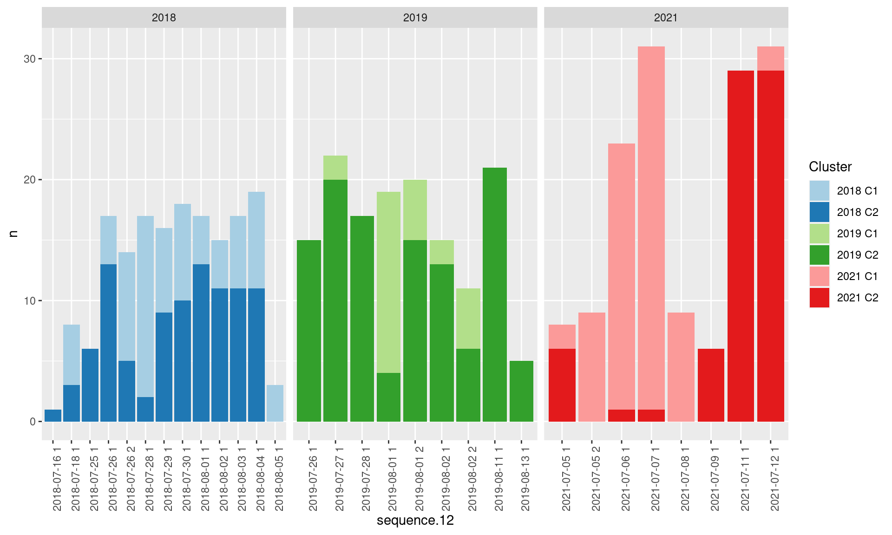
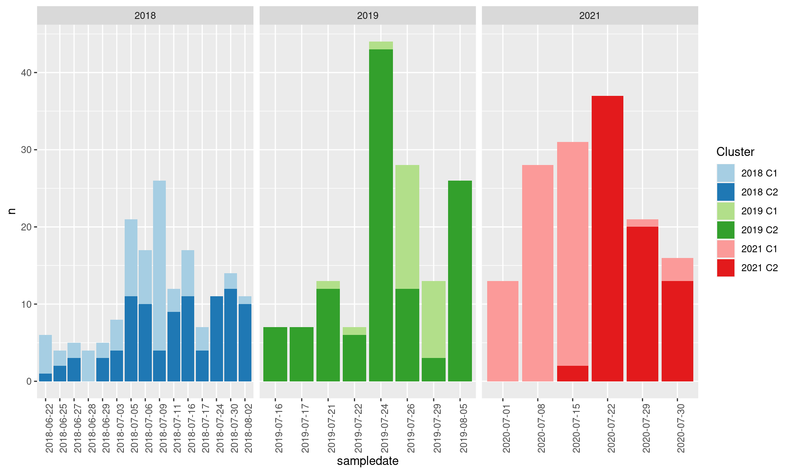
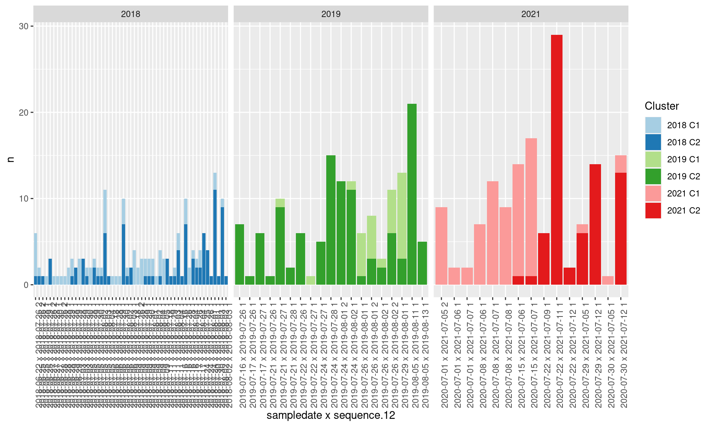
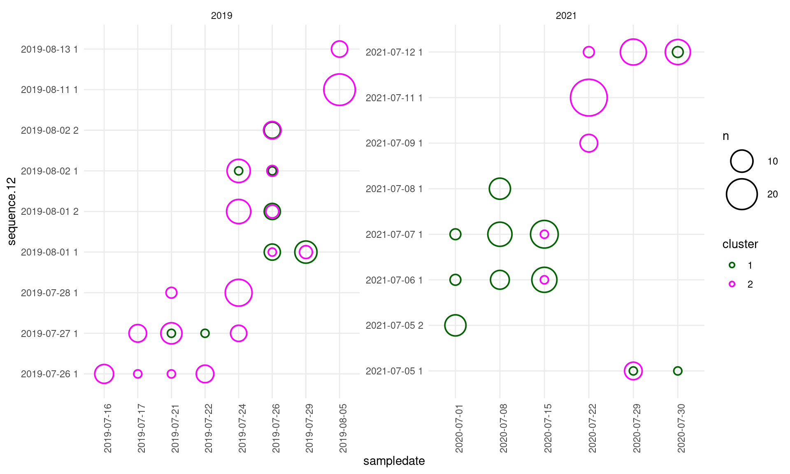
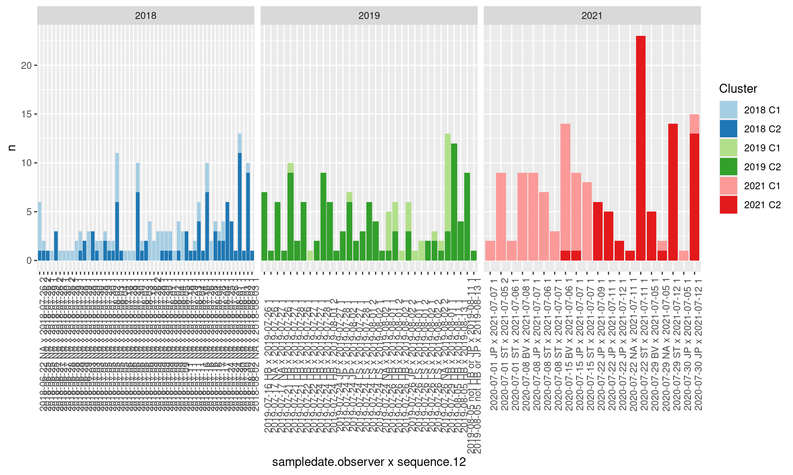
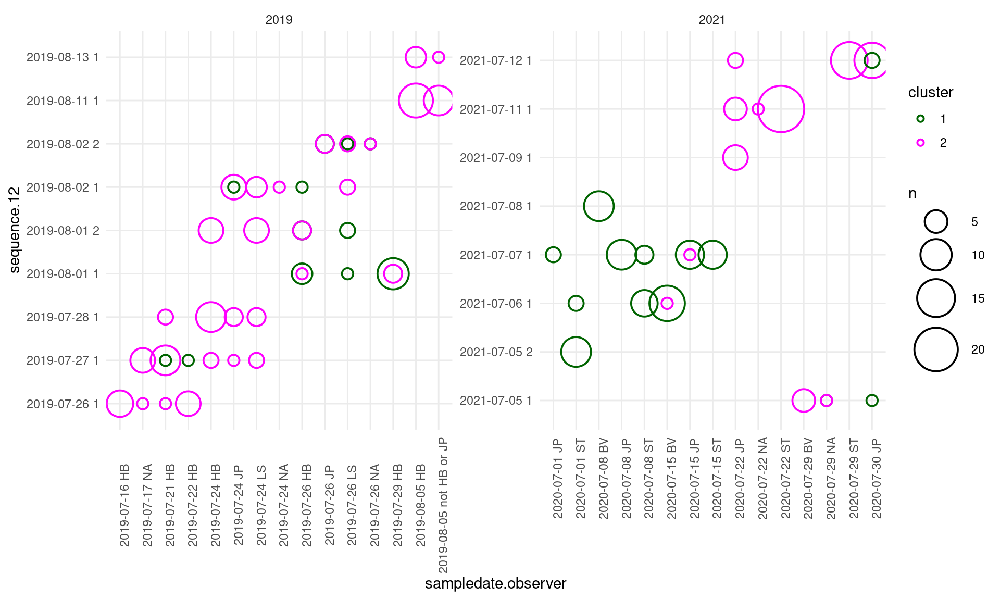
ggplot(volsmeta, aes(x=Desorb.Start.Time, y=cluster)) + geom_line() + geom_point(aes(color=factor(mday(sampledate))))+
facet_wrap(vars(sequence.year), scales="free_x", ncol=1) + scale_color_manual(values=sample(rainbow(30)))+
scale_x_datetime(date_breaks="1 day", guide=guide_axis(angle=90)) + scale_y_discrete()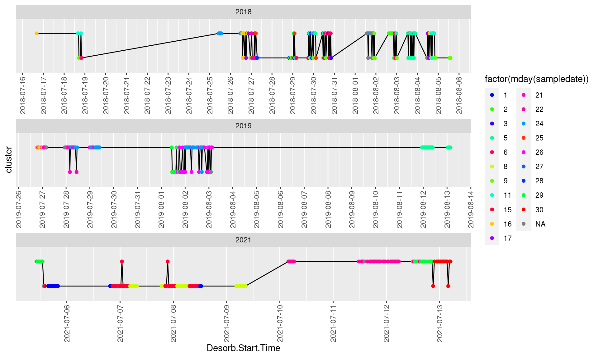
for(yr in unique(year(volsmeta$sequence.start))) {
print(yr)
yrfilter <- year(volsmeta$sequence.start) == yr
vols.cap <- capscale(sqrt(vols.cut[yrfilter,]) ~ factor(date(sequence.start)), data=volsmeta[yrfilter,])
print(vols.cap)
print(anova(vols.cap, by="term"))
# vols.cap.points <- fortify(vols.cap) %>% as_tibble()
# vols.cap.samples <- vols.cap.points %>% filter(Score=="sites") %>%
# left_join(volsmeta, by=c("Label"="index"))
# vols.cap.chems <- vols.cap.points %>% filter(Score=="species")
# p <- vols.cap.samples %>%
# mutate(sequence.date = date(sequence.start)) %>%
# filter(sequence.year == yr) %>%
# ggplot(aes(x=CAP1, y=CAP2)) + theme_classic()+
# geom_point(aes(color=factor(sequence.date)), size=3) + scale_color_hue("Run date")
# print(p)
}[1] 2018
Call: capscale(formula = sqrt(vols.cut[yrfilter, ]) ~
factor(date(sequence.start)), data = volsmeta[yrfilter, ])
Inertia Proportion Rank
Total 3.58e+07 1.00e+00
Constrained 8.48e+06 2.36e-01 11
Unconstrained 2.74e+07 7.64e-01 88
Inertia is mean squared Euclidean distance
Species scores projected from 'sqrt' 'vols.cut[yrfilter, ]'
Eigenvalues for constrained axes:
CAP1 CAP2 CAP3 CAP4 CAP5 CAP6 CAP7 CAP8 CAP9 CAP10
2846450 2522429 1202386 489275 397185 344120 208923 174562 136896 84490
CAP11
69188
Eigenvalues for unconstrained axes:
MDS1 MDS2 MDS3 MDS4 MDS5 MDS6 MDS7 MDS8
6560009 4236095 1782454 1579282 1054984 1007955 856724 702605
(Showing 8 of 88 unconstrained eigenvalues)
Permutation test for capscale under reduced model
Terms added sequentially (first to last)
Permutation: free
Number of permutations: 999
Model: capscale(formula = sqrt(vols.cut[yrfilter, ]) ~ factor(date(sequence.start)), data = volsmeta[yrfilter, ])
Df Variance F Pr(>F)
factor(date(sequence.start)) 11 8475902 4.39 0.001 ***
Residual 156 27369925
---
Signif. codes: 0 '***' 0.001 '**' 0.01 '*' 0.05 '.' 0.1 ' ' 1
[1] 2019
Call: capscale(formula = sqrt(vols.cut[yrfilter, ]) ~
factor(date(sequence.start)), data = volsmeta[yrfilter, ])
Inertia Proportion Rank
Total 7.77e+07 1.00e+00
Constrained 1.37e+07 1.76e-01 6
Unconstrained 6.40e+07 8.24e-01 89
Inertia is mean squared Euclidean distance
Species scores projected from 'sqrt' 'vols.cut[yrfilter, ]'
Eigenvalues for constrained axes:
CAP1 CAP2 CAP3 CAP4 CAP5 CAP6
9573124 2384418 743376 445601 361725 179629
Eigenvalues for unconstrained axes:
MDS1 MDS2 MDS3 MDS4 MDS5 MDS6 MDS7 MDS8
34584419 4002172 2560566 1967341 1476215 1422494 1328896 1241090
(Showing 8 of 89 unconstrained eigenvalues)
Permutation test for capscale under reduced model
Terms added sequentially (first to last)
Permutation: free
Number of permutations: 999
Model: capscale(formula = sqrt(vols.cut[yrfilter, ]) ~ factor(date(sequence.start)), data = volsmeta[yrfilter, ])
Df Variance F Pr(>F)
factor(date(sequence.start)) 6 13687873 4.92 0.001 ***
Residual 138 63996960
---
Signif. codes: 0 '***' 0.001 '**' 0.01 '*' 0.05 '.' 0.1 ' ' 1
[1] 2021
Call: capscale(formula = sqrt(vols.cut[yrfilter, ]) ~
factor(date(sequence.start)), data = volsmeta[yrfilter, ])
Inertia Proportion Rank
Total 1.35e+08 1.00e+00
Constrained 4.62e+07 3.43e-01 6
Unconstrained 8.85e+07 6.57e-01 90
Inertia is mean squared Euclidean distance
Species scores projected from 'sqrt' 'vols.cut[yrfilter, ]'
Eigenvalues for constrained axes:
CAP1 CAP2 CAP3 CAP4 CAP5 CAP6
41489418 2423189 834628 759488 498655 241430
Eigenvalues for unconstrained axes:
MDS1 MDS2 MDS3 MDS4 MDS5 MDS6 MDS7 MDS8
39776235 5939815 4971861 3227157 2883716 2633380 2097703 1963548
(Showing 8 of 90 unconstrained eigenvalues)
Permutation test for capscale under reduced model
Terms added sequentially (first to last)
Permutation: free
Number of permutations: 999
Model: capscale(formula = sqrt(vols.cut[yrfilter, ]) ~ factor(date(sequence.start)), data = volsmeta[yrfilter, ])
Df Variance F Pr(>F)
factor(date(sequence.start)) 6 46246809 12.1 0.001 ***
Residual 139 88510578
---
Signif. codes: 0 '***' 0.001 '**' 0.01 '*' 0.05 '.' 0.1 ' ' 1Ordinations
NMDS
(vols.nmds <- metaMDS(sqrt(vols.cut), autotransform=FALSE, trace=F))
Call:
metaMDS(comm = sqrt(vols.cut), autotransform = FALSE, trace = F)
global Multidimensional Scaling using monoMDS
Data: sqrt(vols.cut)
Distance: bray
Dimensions: 2
Stress: 0.1344
Stress type 1, weak ties
Two convergent solutions found after 20 tries
Scaling: centring, PC rotation, halfchange scaling
Species: expanded scores based on 'sqrt(vols.cut)' vols.nmds.points <- fortify(vols.nmds) %>% as_tibble()
vols.nmds.samples <- vols.nmds.points %>% filter(Score=="sites") %>%
left_join(volsmeta, by=c("Label"="index"))
vols.nmds.chems <- vols.nmds.points %>% filter(Score=="species")
(scents.nmds <- metaMDS(sqrt(vols.good[nonzero,]), autotransform=FALSE, trace=F)) #had noshare = FALSE
Call:
metaMDS(comm = sqrt(vols.good[nonzero, ]), autotransform = FALSE, trace = F)
global Multidimensional Scaling using monoMDS
Data: sqrt(vols.good[nonzero, ])
Distance: bray
Dimensions: 2
Stress: 0.2288
Stress type 1, weak ties
No convergent solutions - best solution after 20 tries
Scaling: centring, PC rotation, halfchange scaling
Species: expanded scores based on 'sqrt(vols.good[nonzero, ])' nmds.points <- fortify(scents.nmds) %>% as_tibble()
nmds.samples <- nmds.points %>% filter(Score=="sites") %>% left_join(volsmeta, by=c("Label"="index"))
nmds.chems <- nmds.points %>% filter(Score=="species")
vols.plot <- ggplot(vols.nmds.samples, aes(x=NMDS1, y=NMDS2)) + theme_classic() +
geom_point(aes(color=factor(sequence.year))) +
labs(title="Unfiltered NMDS by year", color="Year")
vols.good.plot <- ggplot(nmds.samples, aes(x=NMDS1, y=NMDS2)) + theme_classic() +
#geom_text(data=nmds.chems, aes(label=Label)) +
geom_point(aes(color=factor(sequence.year)))+
#geom_point(aes(color=water, shape=year)) + scale_color_manual("Precipitation", values=water_pal) +
labs(title="Filtered NMDS by year", color="Year")
grid.arrange(vols.plot, vols.good.plot)
for(yr in unique(year(volsmeta$sequence.start))) {
thisyr <- year(volsmeta$sequence.start)==yr
(vols.nmds <- metaMDS(sqrt(vols.cut[thisyr,]), autotransform=FALSE, trace=F))
vols.nmds.points <- fortify(vols.nmds) %>% as_tibble()
vols.nmds.samples <- vols.nmds.points %>% filter(Score=="sites") %>%
left_join(volsmeta, by=c("Label"="index")) %>% filter(sequence.year == yr)
vols.nmds.chems <- vols.nmds.points %>% filter(Score=="species")
(scents.nmds <- metaMDS(sqrt(vols.good[nonzero & thisyr,]), autotransform=FALSE, trace=F))
nmds.points <- fortify(scents.nmds) %>% as_tibble()
nmds.samples <- nmds.points %>% filter(Score=="sites") %>%
left_join(volsmeta, by=c("Label"="index")) %>% filter(sequence.year == yr)
nmds.chems <- nmds.points %>% filter(Score=="species")
vols.plot <- vols.nmds.samples %>%
ggplot(aes(x=NMDS1, y=NMDS2)) + theme_classic()+ labs(title = paste("Unfiltered NMDS run",yr))+
geom_text(aes(color=factor(sequence.date), label=cluster), size=4) + scale_color_hue("Run date")
vols.good.plot <- nmds.samples %>%
ggplot(aes(x=NMDS1, y=NMDS2)) + theme_classic()+ labs(title = paste("Filtered NMDS run",yr))+
geom_text(aes(color=factor(sequence.date), label=cluster), size=4) + scale_color_hue("Run date")
grid.arrange(vols.plot, vols.good.plot)
}
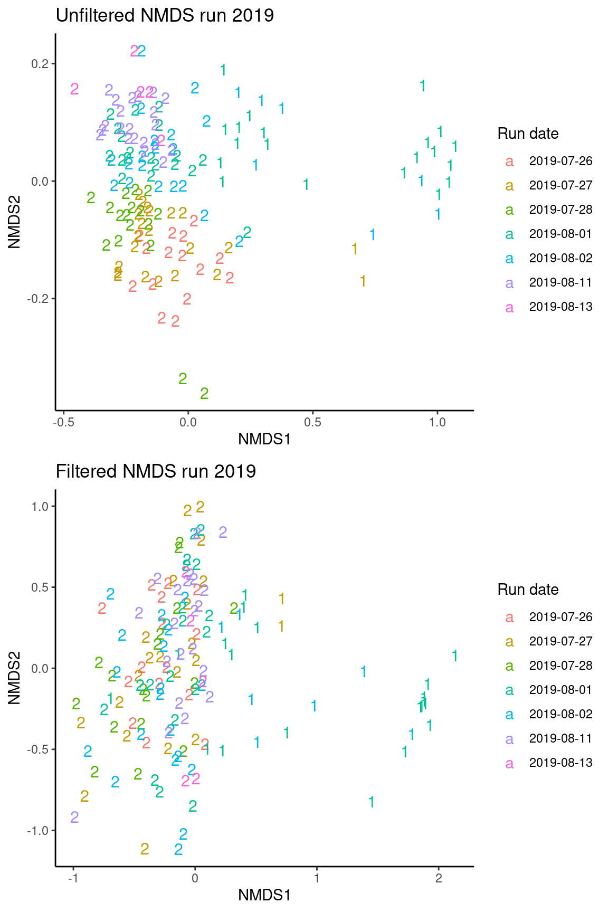
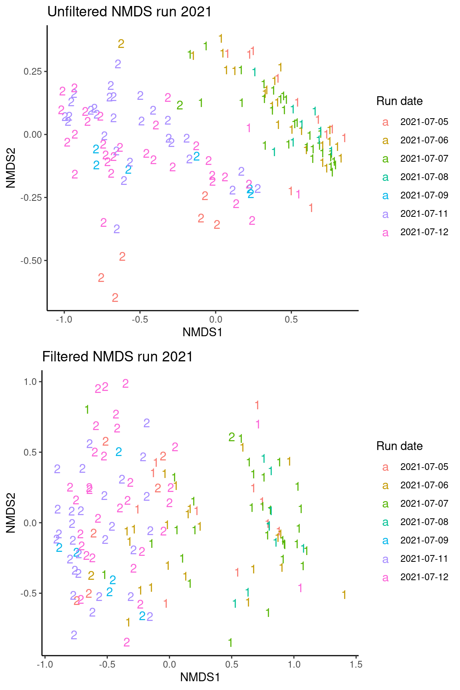
(vols.nmds <- metaMDS(sqrt(vols.cut), autotransform=FALSE, trace=F))
Call:
metaMDS(comm = sqrt(vols.cut), autotransform = FALSE, trace = F)
global Multidimensional Scaling using monoMDS
Data: sqrt(vols.cut)
Distance: bray
Dimensions: 2
Stress: 0.1344
Stress type 1, weak ties
Two convergent solutions found after 20 tries
Scaling: centring, PC rotation, halfchange scaling
Species: expanded scores based on 'sqrt(vols.cut)' vols.nmds.points <- fortify(vols.nmds) %>% as_tibble()
vols.nmds.samples <- vols.nmds.points %>% filter(Score=="sites") %>%
left_join(volsmeta, by=c("Label"="index"))
vols.nmds.chems <- vols.nmds.points %>% filter(Score=="species")
(scents.nmds <- metaMDS(sqrt(vols.good[nonzero,]), autotransform=FALSE, trace=F)) #had noshare = FALSE
Call:
metaMDS(comm = sqrt(vols.good[nonzero, ]), autotransform = FALSE, trace = F)
global Multidimensional Scaling using monoMDS
Data: sqrt(vols.good[nonzero, ])
Distance: bray
Dimensions: 2
Stress: 0.2289
Stress type 1, weak ties
No convergent solutions - best solution after 20 tries
Scaling: centring, PC rotation, halfchange scaling
Species: expanded scores based on 'sqrt(vols.good[nonzero, ])' nmds.points <- fortify(scents.nmds) %>% as_tibble()
nmds.samples <- nmds.points %>% filter(Score=="sites") %>% left_join(volsmeta, by=c("Label"="index"))
nmds.chems <- nmds.points %>% filter(Score=="species")
vols.plot <- ggplot(vols.nmds.samples, aes(x=NMDS1, y=NMDS2)) + theme_classic() +
geom_point(aes(color=factor(sequence.year))) +
geom_text(data=vols.nmds.chems, aes(label=Label)) +
labs(title="Unfiltered NMDS by year", color="Year")
vols.good.plot <- ggplot(nmds.samples, aes(x=NMDS1, y=NMDS2)) + theme_classic() +
geom_point(aes(color=factor(sequence.year)))+
geom_text(data=nmds.chems, aes(label=Label)) +
#geom_point(aes(color=water, shape=year)) + scale_color_manual("Precipitation", values=water_pal) +
labs(title="Filtered NMDS by year", color="Year")
grid.arrange(vols.plot, vols.good.plot)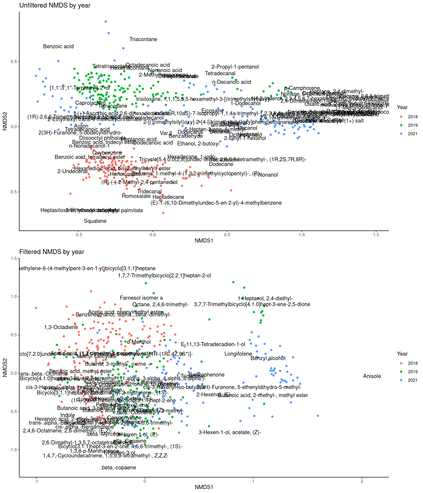
for(yr in unique(year(volsmeta$sequence.start))) {
(vols.nmds <- metaMDS(sqrt(vols.cut[year(volsmeta$sequence.start)==yr,]), autotransform=FALSE, trace=F))
vols.nmds.points <- fortify(vols.nmds) %>% as_tibble()
vols.nmds.samples <- vols.nmds.points %>% filter(Score=="sites") %>%
left_join(volsmeta, by=c("Label"="index"))
vols.nmds.chems <- vols.nmds.points %>% filter(Score=="species")
(scents.nmds <- metaMDS(sqrt(vols.good[nonzero & year(volsmeta$sequence.start)==yr,]), autotransform=FALSE, trace=F)) #had noshare = FALSE
nmds.points <- fortify(scents.nmds) %>% as_tibble()
nmds.samples <- nmds.points %>% filter(Score=="sites") %>% left_join(volsmeta, by=c("Label"="index"))
nmds.chems <- nmds.points %>% filter(Score=="species")
vols.plot <- vols.nmds.samples %>%
filter(sequence.year == yr) %>%
ggplot(aes(x=NMDS1, y=NMDS2)) + theme_classic()+ labs(title = paste("Unfiltered NMDS run",yr))+
geom_point(aes(color=factor(sequence.date)), size=3) + scale_color_hue("Run date") +
geom_text(data=vols.nmds.chems, aes(label=Label))
vols.good.plot <- nmds.samples %>%
filter(sequence.year == yr) %>%
ggplot(aes(x=NMDS1, y=NMDS2)) + theme_classic()+ labs(title = paste("Filtered NMDS run",yr))+
geom_point(aes(color=factor(sequence.date)), size=3) + scale_color_hue("Run date")+
geom_text(data=nmds.chems, aes(label=Label))
grid.arrange(vols.plot, vols.good.plot)
}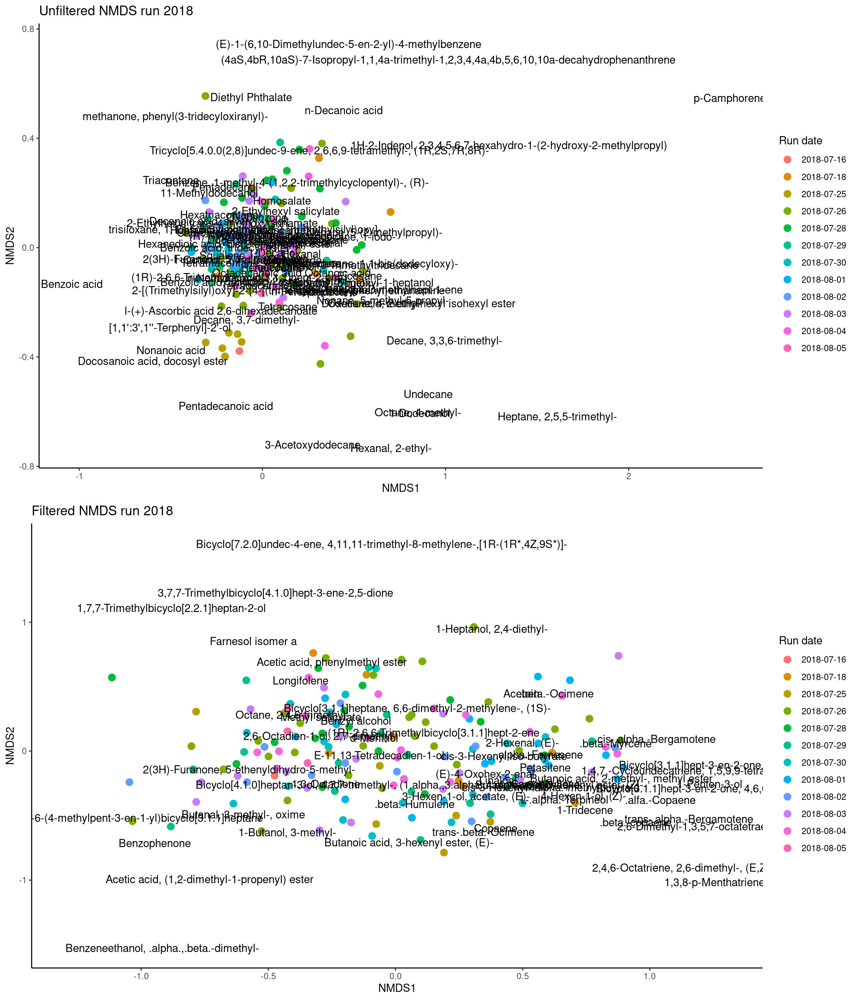
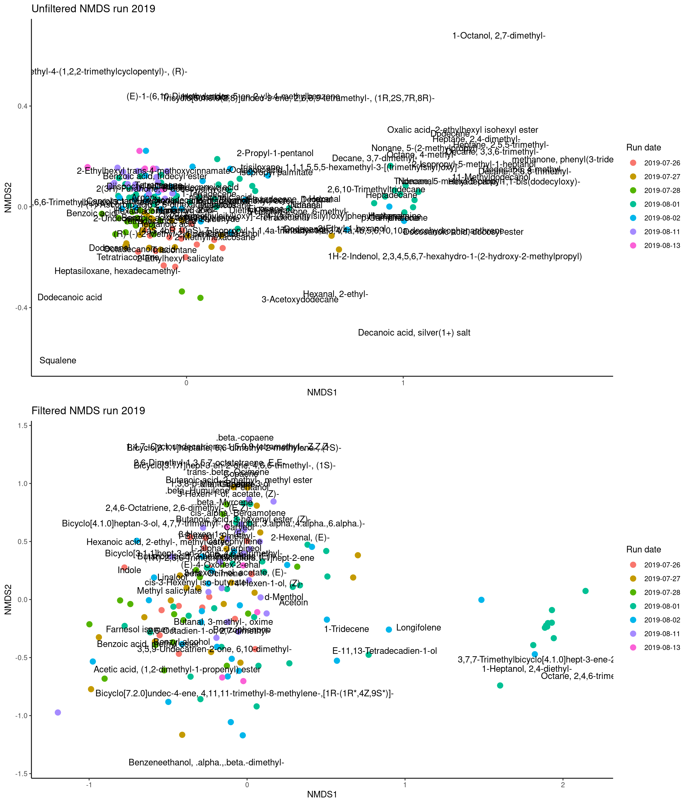
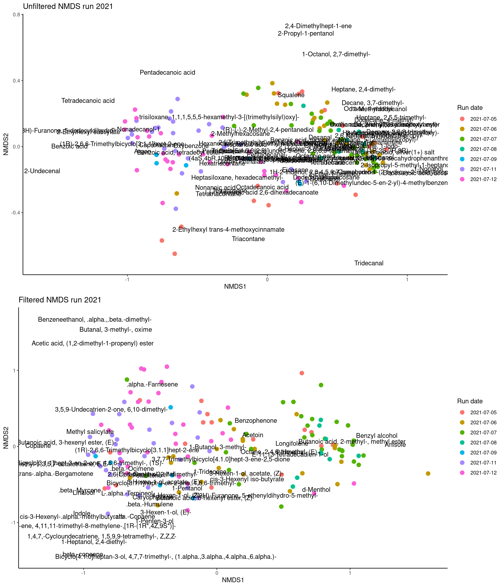
Plasticity analyses
Plasticity to treatments
CAP
(scents.cap <- capscale(sqrt(vols.good) ~ year.cluster * water * snow, data=volsmeta))Call: capscale(formula = sqrt(vols.good) ~ year.cluster * water * snow,
data = volsmeta)
Inertia Proportion Rank
Total 52.619 1.000
Constrained 12.858 0.244 29
Unconstrained 39.761 0.756 65
Inertia is mean squared Euclidean distance
Species scores projected from 'sqrt' 'vols.good'
Eigenvalues for constrained axes:
CAP1 CAP2 CAP3 CAP4 CAP5 CAP6 CAP7 CAP8 CAP9 CAP10 CAP11 CAP12 CAP13
5.99 2.74 1.96 0.56 0.35 0.22 0.17 0.14 0.11 0.10 0.09 0.07 0.07
CAP14 CAP15 CAP16 CAP17 CAP18 CAP19 CAP20 CAP21 CAP22 CAP23 CAP24 CAP25 CAP26
0.05 0.04 0.03 0.03 0.03 0.03 0.02 0.02 0.01 0.01 0.01 0.01 0.01
CAP27 CAP28 CAP29
0.01 0.00 0.00
Eigenvalues for unconstrained axes:
MDS1 MDS2 MDS3 MDS4 MDS5 MDS6 MDS7 MDS8
14.86 3.20 2.76 1.70 1.61 1.57 1.30 1.12
(Showing 8 of 65 unconstrained eigenvalues)anova(scents.cap, by="term")Permutation test for capscale under reduced model
Terms added sequentially (first to last)
Permutation: free
Number of permutations: 999
Model: capscale(formula = sqrt(vols.good) ~ year.cluster * water * snow, data = volsmeta)
Df Variance F Pr(>F)
year.cluster 4 10.0 26.87 0.001 ***
water 2 0.4 2.08 0.027 *
snow 1 0.1 1.50 0.143
year.cluster:water 8 0.9 1.26 0.120
year.cluster:snow 4 0.5 1.27 0.150
water:snow 2 0.3 1.66 0.062 .
year.cluster:water:snow 8 0.7 0.89 0.638
Residual 429 39.8
---
Signif. codes: 0 '***' 0.001 '**' 0.01 '*' 0.05 '.' 0.1 ' ' 1scents.cap <- capscale(sqrt(vols.good) ~ year.cluster + water, data=volsmeta)
plot(scents.cap, type="n")
points(scents.cap, display = "sites", col=water_pal[volsmeta$water], pch=as.integer(volsmeta$year)+14)
text(scents.cap, display="cn", labels=c(unique(volsmeta$year.cluster), names(water_pal)), col=c(rep("black",5),water_pal), font=2, cex=1.5)
plot(scents.cap, type="n")
text(scents.cap, display="species", col="black", cex=0.5)
Boxplots
treatment_boxplots <- function(volsmeta.vol, treatment) {
ggplot(volsmeta.vol, aes_string(x = "year.cluster", fill = treatment, y = "value")) +
facet_wrap(vars(name), scales="free_y") + geom_boxplot(outlier.size=1) + scale_y_sqrt() +
scale_fill_manual(values=list(water=water_pal, snow=snow_pal)[[treatment]]) + theme_bw() +
labs(x="Year and cluster", y ="Emissions (ng/hr)", fill=c(water="Precipitation",snow="Snowmelt")[[treatment]])
}
treatment_boxplots(volsmeta.good.top, "water")
treatment_boxplots(volsmeta.drydown, "water")
treatment_boxplots(volsmeta.good.top, "snow")
treatment_boxplots(volsmeta.drydown, "snow")
Plasticity to soil moisture
CAP
hasVWC <- !is.na(volsmeta$VWC)
(scents.cap <- capscale(sqrt(vols.good[hasVWC,]) ~ year.cluster * VWC, data=volsmeta[hasVWC,]))Call: capscale(formula = sqrt(vols.good[hasVWC, ]) ~ year.cluster *
VWC, data = volsmeta[hasVWC, ])
Inertia Proportion Rank
Total 54.410 1.000
Constrained 11.338 0.208 9
Unconstrained 43.073 0.792 65
Inertia is mean squared Euclidean distance
Species scores projected from 'sqrt' 'vols.good[hasVWC, ]'
Eigenvalues for constrained axes:
CAP1 CAP2 CAP3 CAP4 CAP5 CAP6 CAP7 CAP8 CAP9
5.77 2.62 1.95 0.52 0.19 0.14 0.08 0.04 0.03
Eigenvalues for unconstrained axes:
MDS1 MDS2 MDS3 MDS4 MDS5 MDS6 MDS7 MDS8
16.06 3.49 2.82 1.90 1.79 1.67 1.46 1.24
(Showing 8 of 65 unconstrained eigenvalues)anova(scents.cap, by="term")Permutation test for capscale under reduced model
Terms added sequentially (first to last)
Permutation: free
Number of permutations: 999
Model: capscale(formula = sqrt(vols.good[hasVWC, ]) ~ year.cluster * VWC, data = volsmeta[hasVWC, ])
Df Variance F Pr(>F)
year.cluster 4 10.6 25.04 0.001 ***
VWC 1 0.0 0.42 0.949
year.cluster:VWC 4 0.7 1.71 0.038 *
Residual 408 43.1
---
Signif. codes: 0 '***' 0.001 '**' 0.01 '*' 0.05 '.' 0.1 ' ' 1Scatterplots
ggplot(volsmeta.good.top, aes(x = VWC, color = year.cluster, y = value)) + facet_wrap(vars(name), scales="free_y") +
geom_point() + geom_smooth(se=F, span=1)+ theme_minimal()+ xlim(c(0,15))+ #TODO cuts off a few high VWC values
scale_y_sqrt() + labs(x="Soil moisture (%VWC)", y ="Emissions (ng/hr)", color="Year")
ggplot(volsmeta.drydown, aes(x = VWC, color = year.cluster, y = value)) + facet_wrap(vars(name), scales="free_y") +
geom_point() + geom_smooth(se=F, span=1)+ theme_minimal()+ xlim(c(0,15))+ #TODO cuts off a few high VWC values
scale_y_sqrt() + labs(x="Soil moisture (%VWC)", y ="Emissions (ng/hr)", color="Year")
Selection analyses
Plots of selection in treatments and years
ggplot(traits.good.top, aes(x=value, y=seeds_est, color=year.cluster)) +
geom_point() + geom_smooth(method="lm", se=F) +
facet_wrap(vars(name), scales="free_x") +
labs(x="Emissions", y="Seed production", color="Year")+
theme_bw()+ scale_x_sqrt()
ggplot(traits.good.top, aes(x=value, y=seeds_est, color=water, linetype=year.cluster)) +
geom_point() + geom_smooth(method="lm",se=F) +
facet_wrap(vars(name), scales="free_x") +
labs(x="Emissions", y="Seed production", color="Precipitation", linetype="Year")+
theme_bw() + scale_color_manual(values=water_pal)+ scale_x_sqrt()
ggplot(traits.good.top, aes(x=value, y=seeds_est, color=snow, linetype=year.cluster)) +
geom_point() + geom_smooth(method="lm",se=F) +
facet_wrap(vars(name), scales="free_x") +
labs(x="Emissions", y="Seed production", color="Snowmelt", linetype="Year")+
theme_bw() + scale_color_manual(values=snow_pal)+ scale_x_sqrt()
Fly infestation vs. volatiles
ggplot(traits.good.top %>% filter(fruits_nonaborted>4), aes(x=value, y=prop_infested, color=year)) +
geom_point() + geom_smooth(method="loess",span=1,se=F) +
facet_wrap(vars(name), scales="free_x") +
labs(x="Emissions", y=paste(traitnames.units["prop_infested"], "(>4 fruits)"), color="Year")+
theme_bw()+scale_color_manual(values=year_pal) +
scale_x_sqrt()
Selection gradients
Following method of Chong et al. 2018 for reconstructing selection estimates from estimates of selection on PCs: Beta = E * A.
- PCA can’t handle missing values so they are removed, but this biases the data and reduces sample size - multiple imputation?
calculate_beta <- function(E, slopes) {
data.frame(B = E %*% slopes$A,
SE = sqrt(E ^ 2 %*% slopes$SE ^ 2)) %>% rownames_to_column("trait")
}
selection_pca <- function(year, water) {
vols.std <- bind_cols(volsmeta, vols.good.top) %>%
filter(year == .env$year, water %in% .env$water) %>%
left_join(mnps.plantyr %>% select(year, plotid, plant, seeds_est)) %>%
select(all_of(ipogood.top),seeds_est, any_of(names(treatments))) %>%
mutate(across(all_of(ipogood.top), ~ (.x-mean(.x, na.rm=T))/sd(.x, na.rm=T))) %>%
group_by(year) %>% mutate(seeds_rel = seeds_est/mean(seeds_est, na.rm=T), .keep="unused") %>% ungroup %>%
drop_na(seeds_rel) %>%
select(where(~sum(is.na(.))==0)) #drop_na(all_of(ipogood.top))
# Run PCA on traits
vols.PCA <- vols.std %>% select(any_of(ipogood.top)) %>% prcomp()
summary(vols.PCA) # PCs 1 - 5 explain 51% of the variation
vols.PCA.E <- vols.PCA$rotation[,1:5]
vols.std.PCA <- bind_cols(vols.std, as.data.frame(vols.PCA$x))
# Regress relative fitness on PCs
vols.PCA.regression <- lm(seeds_rel ~ PC1 + PC2 + PC3 + PC4 + PC5, data = vols.std.PCA)
vols.PCA.slopes <- tidy(vols.PCA.regression) %>% filter(term != "(Intercept)") %>% rename(A=estimate, SE=std.error)
# Convert selection gradients on PCs to gradients on traits
calculate_beta(vols.PCA.E, vols.PCA.slopes)
}
plot_beta <- function(betas, colorby="year") {
betas %>% mutate(trait = fct_reorder(trait, B)) %>%
ggplot(aes(y=trait, x = B, xmin=B-SE, xmax=B+SE)) +
geom_vline(xintercept=0)+ geom_pointrange(aes_string(color=colorby), position=position_dodge(width=0.5)) +
labs(x = "Selection gradient (beta) estimated from gradients on PCs", y = "Trait")
}
vols.beta.yr <- map_dfr(set_names(unique(volsmeta$year)),
~ selection_pca(.x, names(water_pal)), .id="year")
plot_beta(vols.beta.yr)
vols.beta.water <- expand_grid(year=unique(volsmeta$year), water=names(water_pal)) %>%
mutate(betas = pmap(., selection_pca)) %>% unnest(betas)
plot_beta(filter(vols.beta.water, year=="2018"), colorby="water") +
scale_color_manual(values=water_pal) + ggtitle("2018")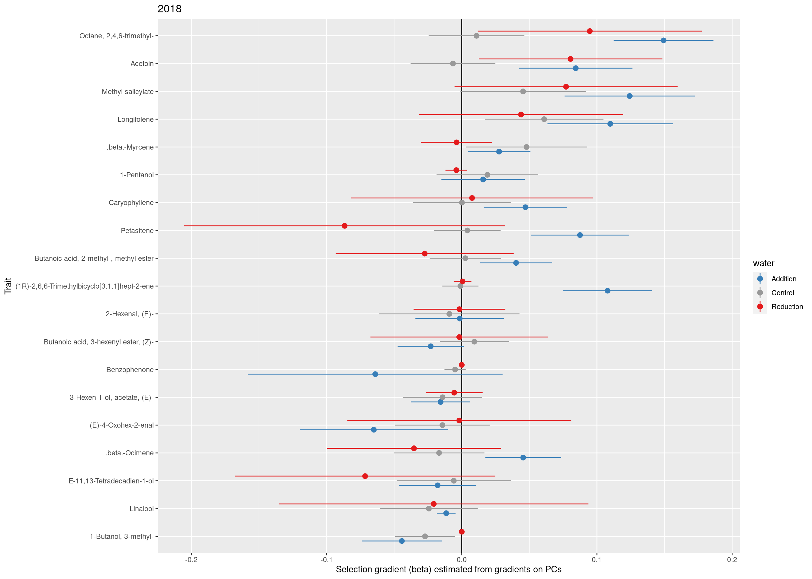
plot_beta(filter(vols.beta.water), colorby="water") +
scale_color_manual(values=water_pal) + facet_wrap(vars(year), nrow=1)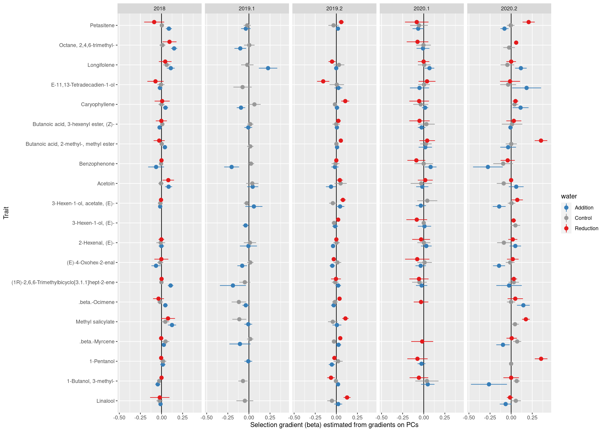
Adaptive plasticity
plasticity <- volsmeta.good.top %>% group_by(year, water, name) %>% summarize(value=mean(value)) %>%
pivot_wider(names_from=water, values_from=value) %>% left_join(ipochems) %>%
mutate(A_C = (Addition-Control)/Control, R_C = (Reduction-Control)/Control, .keep="unused")
plasticity %>% left_join(vols.beta.water %>% rename(name=trait) %>% filter(water=="Addition")) %>%
ggplot(aes(x=A_C, y=B, color=standard)) + facet_wrap(vars(year), ncol=1)+
geom_vline(xintercept=0)+geom_hline(yintercept=0) + geom_text(aes(label=name)) +
scale_color_discrete("Class", labels=c("monoterpene","sesquiterpene","aliphatic","linalool","benzenoid"))+
scale_x_continuous(labels=scales::percent, limits=c(NA,2)) + theme_bw() + theme(legend.position = "top") +
labs(x="Emissions change in Addition vs. Control precipitation", y="Selection gradient (beta) under precipitation addition")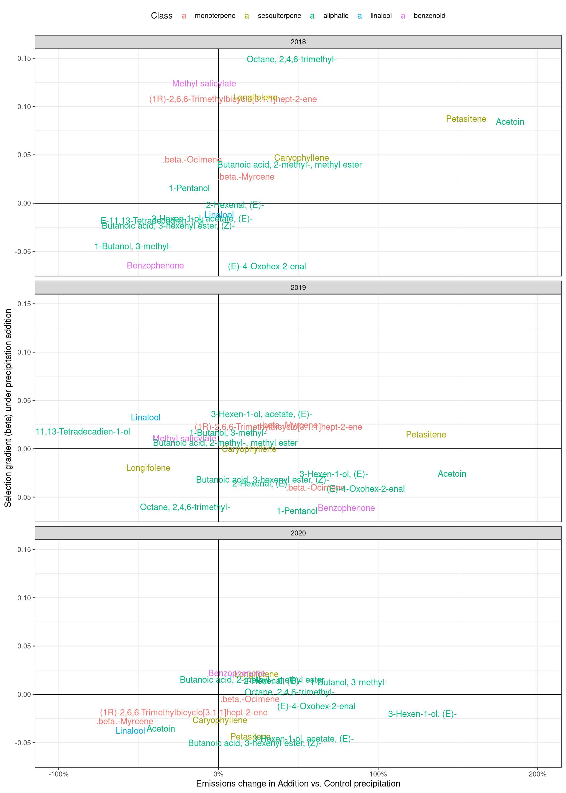
plasticity %>% left_join(vols.beta.water %>% rename(name=trait) %>% filter(water=="Reduction")) %>%
ggplot(aes(x=R_C, y=B, color=standard)) + facet_wrap(vars(year), ncol=1)+
geom_vline(xintercept=0)+geom_hline(yintercept=0) + geom_text(aes(label=name)) +
scale_color_discrete("Class", labels=c("monoterpene","sesquiterpene","aliphatic","linalool","benzenoid"))+
scale_x_continuous(labels=scales::percent, limits=c(NA,4)) + theme_bw() + theme(legend.position = "top") +
labs(x="Emissions change in Reduction vs. Control precipitation", y="Selection gradient (beta) under precipitation reduction")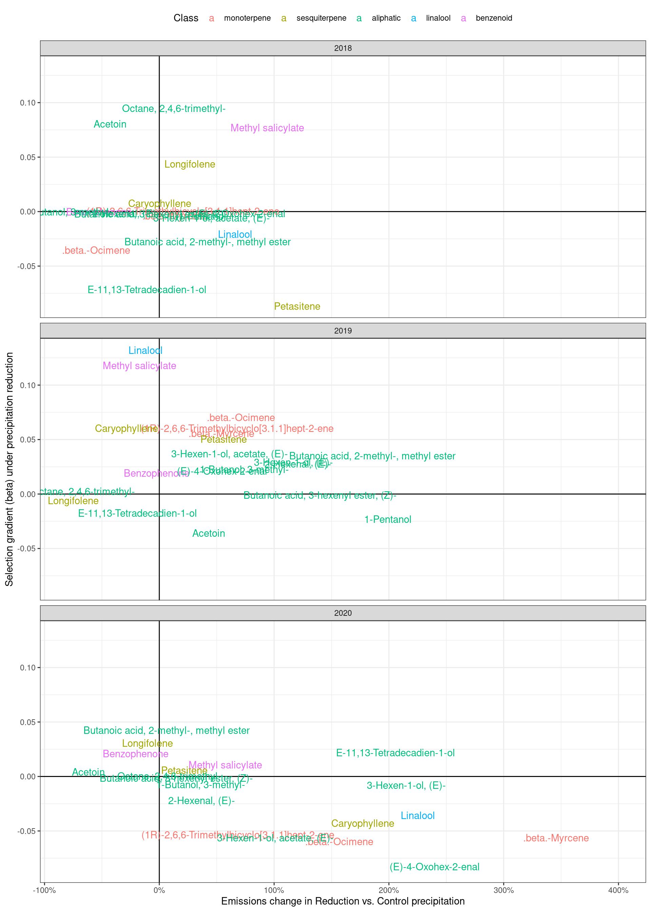
Volatiles vs. floral traits
ggplot(traits.good.top, aes(x=corolla_length, y=value, color=year.cluster)) +
geom_point() + geom_smooth(se=F, span=0.8) +
facet_wrap(vars(name), scales="free_y") +
labs(y="Emissions", x=traitnames.units["corolla_length"], color="Year")+
theme_bw() + scale_y_sqrt()
ggplot(traits.good.top, aes(x=sepal_width, y=value, color=year.cluster)) +
geom_point() + geom_smooth(se=F, span=0.8) +
facet_wrap(vars(name), scales="free_y") +
labs(y="Emissions", x=traitnames.units["sepal_width"], color="Year")+
theme_bw() + scale_y_sqrt()
ggplot(traits.good.top, aes(x=nectar_24_h_ul, y=value, color=year.cluster)) +
geom_point() + geom_smooth(se=F, span=0.8) +
facet_wrap(vars(name), scales="free_y") +
labs(y="Emissions", x=traitnames.units["nectar_24_h_ul"], color="Year")+
theme_bw() + scale_y_sqrt()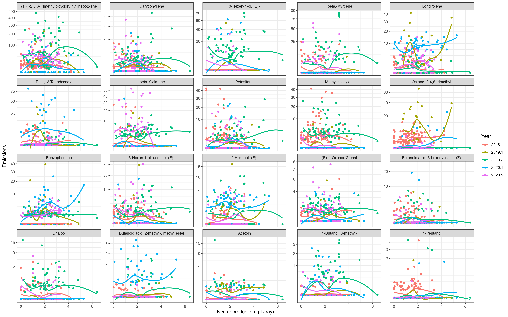